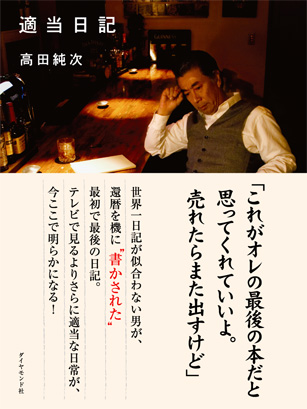

デジタルコンテンツ業界の注目起業がオフショア開発を選んだ理由とは？
ピースオブケイクが切り開くコンテンツの未来
株式会社ピースオブケイク・CEO加藤氏、CTO原永氏インタビュー

2011年の設立以来、「cakes」と「note」ふたつのプラットフォームを立ち上げ、デジタルコンテンツ配信の過去にない新しい仕組みを生み出している株式会社ピースオブケイク。コンテンツとテクノロジーとデザインを融合させた仕組みは、クリエイターや出版業界、メディアからも注目されています。フランジアでは、その開発の一部をお手伝いさせていただいております。CEOの加藤氏、CTOの原永氏にサービスに対する想いやオフショア開発についてお話を伺いました。
加藤：もともと僕は、社会人になってからずっと、11年ほど出版社で本をつくる仕事をしていました。雑誌、本、あとWebもちょっとやっていました。ご存知の通り今の出版業界は、インターネットに押されて本が売れなくなってきています。電車に乗っていてもスマートフォンを見てる人が圧倒的に多く、それが普通の風景になっています。この中でコンテンツを売る仕組みを作らないと、出版やコンテンツビジネスの市場はなくなってしまうのではないか、と危機感を感じていました。そのための仕組みをつくり、そのうえでコンテンツをつくる会社として、ピースオブケイクをはじめました。
起業してまず最初に『cakes』というサービスをつくりました。「雑誌をどうデジタルにするべきか」を考え、たくさんのクリエイターがコンテンツを作り、それを読者がまとめて買い、好きなときに読める場所をネット上につくろうとはじめたのが、cakesです。
最近では、『note』 というサービスをはじめました。これは個人やアーティスト（あるいは個人が集まったグループ）にフォーカスしたコンテンツ配信の仕組みで、ブログに似ているようで、テキストや写真、音楽や動画といった作品をネットに簡単に上げて、ファンと繋がれて、販売もできるのが大きな特徴です。
加藤：理由はいくつかあります。自分自身の話として言うと、仕事って伸びている場所でしたほうが楽しいんですよね。縮んで行く市場で「殴り合いをしながら勝つ」それをずっとやっていたんですけど、それよりも未来に広がりのあるような仕事をしたほうが面白いことができるじゃないかな、というが出版社辞めた理由のひとつです。あと、もともと僕は、学生時代にLinuxのカーネルのコードをいじったりするくらいITが好きだったんですよね。デジタルでコンテンツを売る仕組みが必要だ、と常々考えている時に技術者の原永さんと出会って、いっしょにやれる人が見つかったことが、起業のきっかけでもあります。
加藤 貞顕（かとう さだあき）氏
代表取締役CEO
1973年、新潟県生まれ。大阪大学大学院経済学研究科博士前期課程修了。アスキーにて、雑誌の編集を担当。ダイヤモンド社に移籍し、単行本や電子書籍の編集や、電子書籍アプリの開発に携わる。おもな担当書籍は『ゼロ――なにもない自分に小さなイチを足していく』『もし高校野球の女子マネージャーがドラッカーの『マネジメント』を読んだら』『評価経済社会』『スタバではグランデを買え！』『英語耳』など。2011年12月に株式会社ピースオブケイクを設立、代表取締役CEOに就任。
加藤：はい、当時手がけていた「もしドラ」と「適当日記」は、AppStoreで総合１位を取りました。ただ、同時に限界も感じたんですよね。電子書籍を実際にやってみて、当時のデジタル化の仕組みでは出版という市場全部をまかなうことはできないだろうなと思ったんですよね。
加藤：ふたつの限界を感じました。ひとつは、コンテンツの長さです。本をデジタル化すると、スマホやタブレットで読むことになるんですけど、作っている過程で、抜けなどがないか全ページ確認することになります。それを自分でやってみたのですが、長くてめっちゃきついんですよ。この長さは、紙で読む長さであって、デジタルデバイスで読む長さではないな、というのを自分で体験し、メディア側もデバイスにあわせて変わらないといけないと感じたんです。
もうひとつが、マーケティング情報をプラットフォームが握っているので、コンテンツ側でできることが少なくなるなというのを強く感じたんですね。AppStoreで売上を伸ばそうと思うと、値段を下げてランキングの上位を狙うしかないんですよ。この構造の中でがんばろうと思うと、みんなが無限に値下げ競争を繰り広げることになるので、コンテンツホルダーやクリエイター側の売上は自然に下がっていってしまうだろうと考えました。
デバイスに合わせてコンテンツを短くする必要があること、マーケティングをプラットフォームに握られていること、このふたつの理由で、今後売上が大きくならないのは構造的にあきらかだなと思ったんですね。現状、KindleもAppStoreもランキングの上位は、ゼロ円とか100円とかそんなのばかりになっています。そういうアーキテクチャーなので、そうなりますよね。「これはヤバい。これ以外の新しい仕組みが必要だ」とその時に思ったんですね。そういう状況で原永さんと出会ったんです。
加藤：ぜんぜんなかったですね。会社つくるって大変じゃないですか（笑）「まずい」という状況のときに、「誰かやる人いないかな？」って思っていたんですよ。コンテンツとテクノロジーを両方理解して、いい仕組みをつくる…、なんか…、それってもしかしてオレか！？！？と思ったわけです（笑）
加藤：ソウ・エクスペリエンスという、類まれなるイケメンな西村さんという方がやっている会社がありまして（笑）彼が自由大学という場所で「これからの働き方」という内容で講義をしていて、出版社時代に西村さんへの取材を兼ねて行ったんですね。そこにゲストとして原永さんが来ていたんですよ。正確にはメインゲストではなく（メインゲストは、stores.jpをやっているブラケットの光本さん）そこに、原永さんがなんとなくいたんですね（笑）
原永：ついて行っただけです（笑）
加藤：打ち上げで原永さんと話をしたら意気投合して「それじゃ、なにかやりましょうか」という話になったんです。最初は出版に関係したことではなく、ワインのサイトをやりましょう、という話をしていました。

もし高校野球の女子マネージャーがドラッカーの『マネジメント』を読んだら（ダイヤモンド社）

適当日記（ダイヤモンド社）
原永：もともと僕はいろいろなことをやっていたのですが、出版業界については素人でした。加藤さんとお会いして「もしドラ」の話や出版業界の未来を聞き、今後の可能性や解決しないといけないところがいっぱいあるんだなぁと感じました。
僕はこれまでもプラットフォームをつくってきた人間なので、ターゲットとして何を解決するかというのは柔軟なほうだと思っているんですね。それぞれの時代で、今しかできないことがあり出版業界のデジタル化というのは今しかないと思うんですよ。１００年の間でも大きな過渡期となる２〜３年。ここを逃すと誰もやらない、やるかもしれないけれど変な風に失敗を繰り返しながらいつまでたっても実現できずおかしな業界になっていくかどっちかだと思うので、誰かやらなきゃならないだろうなと感じました。
話を聞いておもしろいと思ってやるエンジニアはいると思うんですけど、絶対ひとりではできない。出版業界と喧嘩をせずに仲良くコミュニケーションを取りながらできる人が必要と考えると、たぶん、加藤さんがどんぴしゃだろうと思い、ご一緒させてください、とお願いをしました。
原永：もともと自分で会社を経営していて、トップとしてやることが好きな人間でした。前職ではナンバー２でやっていたのですが、やっぱり僕はいろいろ自分の考えを言うほうなんですね。別にぶつかったりはしないんですけど、自分は引っ張るほう、引っ張るというか自分の思い通りにしたいタイプなので、そっちの方がいいかなと思って辞めました。しばらく自分の事業に専念していたのですが、加藤さんと知り合ってからはナンバー２でもいいかなと思うようになりました。自分でできないことを支えるという立場で、お互い得意なところを出し合っていけるのであれば、ナンバー１、ナンバー２はどうでも良く、面白いことができるのであれば一緒に業界を盛り上げて行きたいなと思って決断をしました。
加藤さんから声を掛けていただいたのですが、人生の大きな決断になるのに、ものすごく軽いんですよ、誘い方が（笑）ビビりますよ。「お茶しようよ」って言われてお茶してて「原永さんさぁ…、CTOやってくれない？」って、その一言ですよ（笑）それまでお互い話をしていて信頼関係はできていたので「あ、いいっすよ」と即決しました。僕が参画したのは、「今しかできない」というのが大きな理由です。
「お茶しようよ」って言われてお茶してて「原永さんさぁ…、CTOやってくれない？」って、その一言ですよ（笑）
原永：１年くらいですかね。今考えるともすごい運命だと思っています。やっぱり「人間は動いてなんぼだな」ってあの瞬間のことをよく覚えています。実はあのとき寝ぼけてました。僕は酔っ払って寝ぼけている夜に、メールボックスの掃除をする癖があるんです。その時に加藤さんからの「また会いましょね」っていうメールを見つけたんですよ。なんか「会いたいな」と思って。であのときに、1年ぶりに再会をして、（酔ったまま寝ないで）起きててよかったと思いました。
加藤：そう。最初に会ってすぐにメールをしたんですけど、そのまま時間が経っていて、原永さんから「今度会いませんか」みたいなメールが夜中にいきなりきていたんですよね。「おお、久しぶりですね、会いましょう」ということで会いました。2011年の震災後ですね。
原永： 会ったときに「加藤さん、会社作っちゃったんですね。」と（笑）
加藤：「どうしようかな？」みたいな（笑）最初は自分の手金ではじめたんですけど、その時はあまり深く考えてなくて、磯崎さん（ピースオブケイクの出資者）に資金のことで相談をしたら、「やり始めれば、お金はなんとかなるんじゃないですか？」と言われて、別に「僕が出すよ」とか言われたわけではないです（笑）
原永 淳（はらなが じゅん）氏
取締役 CTO
1977年、兵庫県生まれ。青山学院大学理工学研究科機械工学専攻博士前期課程修了。ヤフー株式会社にてトップページのシステム開発・運用、マイヤフーのローカライズなどを担当。独立後はスパーク・ラボ株式会社を設立し、様々なウェブサービスの開発に携わる。ハンドメイド製品のマーケットプレイスcoobooを運営しGMOペパボ株式会社に事業譲渡。株式会社ブラケット取締役兼CTOを経て、2012年1月、株式会社ピースオブケイクの取締役CTOに就任。
ベトナムのオフショア開発の視察、システム開発に関するご質問、
お仕事のご相談、お見積の依頼など、お気軽にお問い合わせください。